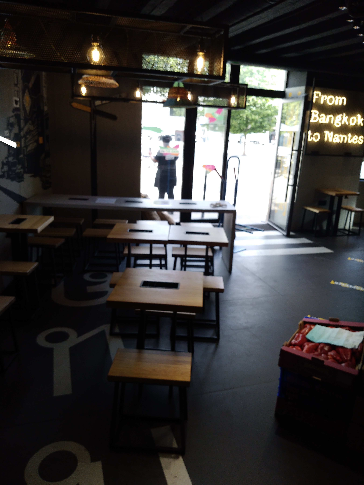
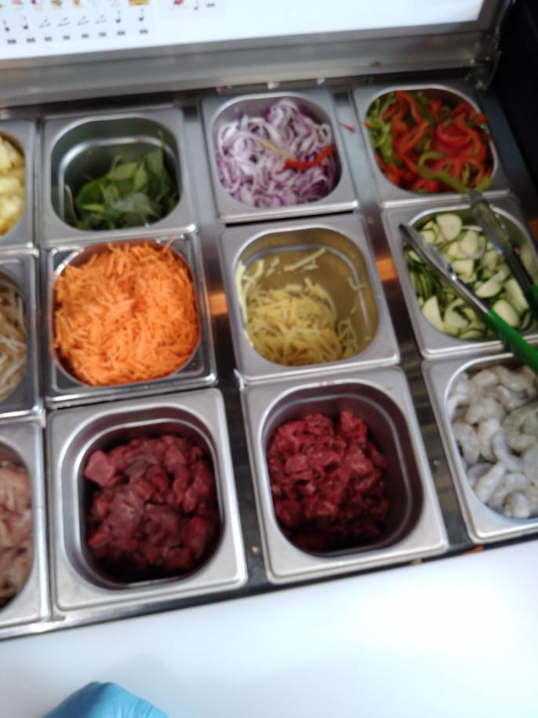

- Retour vers l'acceuil
Cette expérience professionnelle en
tant que cuisinier dans le restaurant PITAYA m’a permis de gagner de l'argent enfin de solder le reste de ma scolarité et
obtenu d’expérience en entreprise enfin de valider ma première
année d’informatique.
le Restaurant PITAYA Notre restaurant thaï à Rennes allie healthy food, gastronomie asiatique et cuisine spectacle. Tradition et modernité dans votre restauran
À la croisée de la street food et des recettes traditionnelles thaïlandaise, Pitaya à Nantes allie ces deux disciplines culinaires à merveille
PITAYA est un restaurant thaïlandais a Nantes situé l'un sur 23 rue des Carmes et l'autre
sur 3 rue Léon Maitre 44000 Nantes sous le SIRET
85253707500024
Décor
soigné, cuisine authentique, colorée et créative, produits frais
et sains : telle est la recette de Pitaya pour une incroyable
immersion thaïlandaise le temps d'un repas
il ouvre ces portes du lundi au Dimanche de 10h à 23h30, Le
restaurant pour l’exécution de ces taches et le bon fonctionnement
de ces activités contient 10 employés qui sont dirigés par la
Responsable et Manager du restaurant qui réponde au Nom de Laure qui
établit le planning de tous les employés sur chaque semaine. Tous
les 10 employés sont au centre du Manger qui fait le planning et
délègue les rôles aux employés de l’entreprise. Dans les 10
employés contient il y a les cuisinés qui font préparés les repas
au Wok, après il y a les caissier(è)s qui réceptionnent les
commandes des clients et enfin les garçons et filles de salle chargé
de rendre les repas aux clients et être disponible pour les besoins
des clients dans le restaurant. Tous les employés sont habillés en
noir jean noir tee-shirt noir et casquettes et chaussures de
sécurités fournies par les responsables hiérarchiques du
restaurant.
Salle de restauration de la clientele

Tenue de TRAVAIL
Les gastronomies de legumes servant a la preparation

Quelaues Menu PITAYA les Pad thaïlandais
Mes Missions au sein du restaurant PITAYA sont de
-Gérer les quantités
de produits à commander et les stocks,
-Réaliser des
inventaires périodiques,
-Réceptionner et
contrôler les livraisons,
-Déconditionner et
stocker les produits.
-Réaliser les
préparations et les découpes préalables (légumes, viandes),
-Fabriquer tous les
plats en respectant les fiches techniques PITAYA,
-Réaliser la cuisson
des plats au Wok,
-Dresser les plats et
les transmettre au personnel de salle,
-Respecter le
fonctionnement hiérarchique de l’établissement.
Les OUTILS ET
METHODOLOGIE DE TRAVAIL
Le Wok est le recipient ou casserole servant a faire préparer les repas
Les Feux Servant a la preparation des menus
les quatres Cuves de riz contenant le riz
Fonctionnement de
PITAYA et Règles de comportement des salariés
Le restaurant ouvre ces
portes du Lundi au Dimanche de 10h à 22h30
Le restaurant pour
l’exécution de ces taches et le bon fonctionnement de ces
activités contient 10 employés qui sont dirigés par la Responsable
et Manager du restaurant qui réponde au Nom de Laure qui établit le
planning de tous les employés sur chaque semaine.
Tous les 10 employés
sont a ces ordres, ils doivent
Sur le Plan
Hygiène et Sécurité-règlement intérieur-charte :
_Respecter
les règles d’hygiène et de sécurité au sein de l’entreprise
en portant les gants, chaussures de sécurités, des masques au sein
des locaux du restaurant, etc….
_Se conformer au à la
discipline intérieure établir par les responsables en particulier
aux prescriptions du Règlement Intérieur ainsi qu’à la Charte
PITAYA.
Mener à bien les
missions confiées
Mener a bien et
convenablement les missions qui m’ont confiées dans l’entreprise
par :
Approvissionnement
et stockage :
-Gérer les quantités
de produits à commander et les stocks,
-Réaliser des
inventaires périodiques,
-Réceptionner et
contrôler les livraisons,
-Déconditionner et
stocker les produits.
Production
et cuisson au Wok :
-Réaliser les
préparations et les découpes préalables (légumes, viandes),
-Fabriquer tous les
plats en respectant les fiches techniques PITAYA,
-Réaliser la cuisson
des plats au Wok,
-Dresser les plats et
les transmettre au personnel de salle,
-Respecter le
fonctionnement hiérarchique de l’établissement.
Hygiène et
sécurité :
En toute situation :
Appliquer et
respecter les règles d’hygiène et de sécurité alimentaire,
Participer à
l’entretien du poste de la cuisine et des locaux annexes,
Nettoyer les
équipements, appareils ainsi que les ustensiles de cuisine et de
cuisson.
•
LES SOFT KILLS
La communication
avoir une bonne communication avec les collegues d'equipe afin que ensemble nous puissons etre a la hauteur des missions au sein du restaurant
:
La Gestion du stress
cette experience ma permis de pouvoir gérer le stress dans les situation ou on a plusieurs commandes et plats a faire en meme temps dans les moments de debordements de la clientele et des commandes en hausse :
-La gestion du temps
gérer le temps trés tot le matin avant midi de facon a finir avec toutes les découpes destinées a faire les commandesa partir de midi
-l'empathie
Comprendre la réalité des autres membres de l'equipe, pour dire arrivé a géré les humeurs et les emotions des autres membres de l'equipe
-Le Sens du Collectif
departager les differents missions avec les membres d'équipe enfin de vite arrivé a atteindre les objectifs